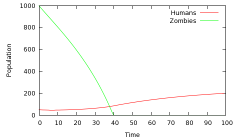
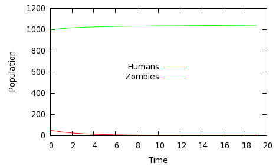
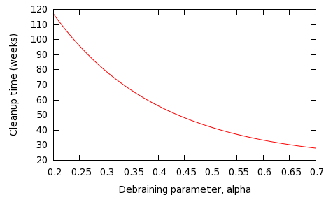
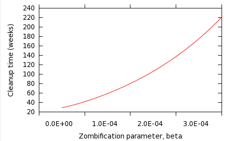
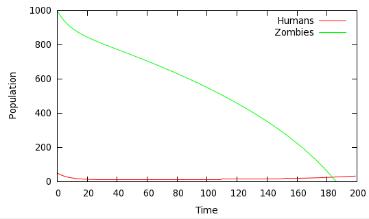
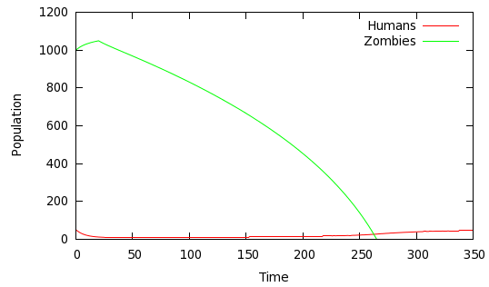
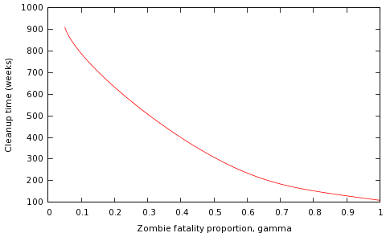

Night of the living differential equations -- modeling the zombie apocalyse
 We all know it's coming, sooner or later. So far, outbreaks of zombiism have
been confined to remote, isolated communities, and have been contained.
Eventually,
however, the contagion will break out in an large, urban area and, before
we know it, the world will be filled with shuffling, decomposing monsters,
intent on only one thing -- devouring the flesh of the small group of
terrified survivors.
Tragically, it is most likely that the bulk of the human
population will become zombies very
rapidly, before anybody realizes the danger. Studies have shown
that even a superficial bite or scratch from a zombie is sufficient to
pass on the contagion. Zombies are not fast, or particularly cunning,
but they are relentless.
Because of the nature of the spread of contagion, probably the only
significant pockets of survivors are likely to be comprised of people
who were in some form of isolation at the start of the outbreak, and
have managed to band together with similar survivors.
If such a group
does manage to get through the first few days of the outbreak, and is fully
aware of the dangers, then it has at least some chance of surviving
in the longer term. It might even be able to eliminate enough zombies
from its own locality to form a real community.
In this article, I describe an algebraic model of human-zombie population
dynamics, and its implementation as a computer simulation. Using the
simulation, certain important factors can be inferred about the factors
that contribute to the long-term survival of a small survivor community, or
otherwise.
We all know it's coming, sooner or later. So far, outbreaks of zombiism have
been confined to remote, isolated communities, and have been contained.
Eventually,
however, the contagion will break out in an large, urban area and, before
we know it, the world will be filled with shuffling, decomposing monsters,
intent on only one thing -- devouring the flesh of the small group of
terrified survivors.
Tragically, it is most likely that the bulk of the human
population will become zombies very
rapidly, before anybody realizes the danger. Studies have shown
that even a superficial bite or scratch from a zombie is sufficient to
pass on the contagion. Zombies are not fast, or particularly cunning,
but they are relentless.
Because of the nature of the spread of contagion, probably the only
significant pockets of survivors are likely to be comprised of people
who were in some form of isolation at the start of the outbreak, and
have managed to band together with similar survivors.
If such a group
does manage to get through the first few days of the outbreak, and is fully
aware of the dangers, then it has at least some chance of surviving
in the longer term. It might even be able to eliminate enough zombies
from its own locality to form a real community.
In this article, I describe an algebraic model of human-zombie population
dynamics, and its implementation as a computer simulation. Using the
simulation, certain important factors can be inferred about the factors
that contribute to the long-term survival of a small survivor community, or
otherwise.
About zombies
In order to model zombie-human population dynamics, we need to understand the characteristics of zombies, and their interaction with humans.- Zombiism is a disease that is transmitted from one individual to another by physical contact, usually biting. The more interaction there is between the zombie and human populations, the more potential there is for contagion.
- Zombies are drawn to eat the flesh of healthy humans. However, they do not need this for nutritive purposes -- zombies seem to be able to survive indefinitely without nutrition. If there are no humans left, the zombie population will not decline, but remain constant. It is not known whether zombies eventually decay to the point of dysfunction, or will start to feed on one another.
- So far as we know, zombies do not feed on vegetables. They certainly can't open tin cans. Consequently, zombies do not put significant pressure on the food reserves of human survivors.
- The only certain way to put down a zombie is total destruction of the brain-stem, or decapitation. This process is colloquially known as 'debraining'.
Building the model
In many ways the interaction between humans and zombies is like a classical predator-prey population dynamic, of the type frequently modeled using the Lotka-Volterra equations. One important difference is that both populations are, in a sense, predators on one another. Moreover, when zombies successfully prey on humans, there is a strong chance that the unfortunate victim will end up joining the zombie population. As a result, the populations of humans and zombies do not follow the cyclic rise and fall associated with the Lotka-Volterra model; in general, one population survives and the other is wiped out, as we shall see. Let's start with the following parameters:| H0 | Size of the human survivor population at time t0 |
| Z0 | Size of the zombie population at time t0 |
β H0Z0Where β is a number that represents the average number of successful zombie attacks per zombie per human per unit time.
| β | Zombie vigour parameter -- attacks per zombie, per human, per unit time |
| γ | Zombie fatality parameter -- proportion of zombie attacks that result in a human fatality, rather than a new zombie. |
γβ H0Z0The zombie population will increase by this amount between t0 and t1, while the human population will decrease by
β H0Z0The human population is decreased by the same amount whether the human ends up dead or a zombie, so γ does not feature in this term. It's reasonable to think that the human population won't submit meekly to the living dead, and will fight back in some way. In this case, however, I suspect that the mass-action principle will not be appropriate. If the population of zombies tends to be much larger than the population or survivors -- as we are assuming here -- then the number of debrainings will not be influenced all that much by the size of the zombie population -- it is effectively unlimited. Rather, it will depend on the size of the human survivor population, and how willing and able people are to take up arms (or axes, or baseball bats, as the case may be.) Consequently, I'm going to assume that the number of zombies debrained between time t0 and t1 is simply given by
α H0
| α | Debraining parameter -- average number of zombies debrained per human survivor per unit time |
| π | 'birth rate' -- number of people joining the survivor community, per unit time |
δH0where δ, the death rate is a number expressed in deaths per person per unit time. It is to be hoped that δ is a number very much less than 1.0.
| δ | death rate -- non zombie-related deaths in the community, per person, per unit time |
[eq.1] H1 = H0 + π - δH0 - βH0Z0 [eq.2] Z1 = Z0 + (1-γ)βH0Z0 - αH0At this point, we could transform these expressions into a pair of autonomous differential equations. The equations are non-linear, however, because they contain product terms H0Z0. Consequently, they have no analytic solution for H and Z in terms of time, but we can implement eq.1 and eq.2 in a computer program, and let it loop around for as long as required, feeding the generated values of H and Z back into the model at each iteration.
Implementing the mathematical model in a computer program
I've implemented the population model of eq.1 and eq.2 in a C program, which can be downloaded here. The program takes the parameters Hgnuplot to be plotted.
Although the program is
several hundred lines long, most of this is for checking errors and
processing the command-line arguments. If you look at the code, you'll
see all of the real work is done in the function run_model(),
which is only a few lines long. This program is, in fact, an implementation
of Euler's method for solving differential equations numerically.
Euler's method has the advantage of speed and simplicity, and it's
accurate enough for our purposes, given that the values of all the
input parameters are entirely speculative.
A sample run of the program might look like this:
zom -t 100 -H 50 -Z 1000 -a 0.5 -b 0.00001 -p 5 -d 0.02 -r 0 -g 0.5 > zom.datThe argument
-t indicates the number of time intervals for to
iterate. -H and -Z are the initial numbers of
humans and zombies respectively. -a, -b,
-g, -d, and -p are the values
of α, β, γ, δ, and π in the model
description above. The argument -r indicates when the
human population should start to retaliate against the zombies, and
can be used to simulate the effect of delayed retaliation (see
discussion below).
Sample simulations
For simplicity, I'm going to assume that the events of the immediate post-apocalyptic period play out in at most a few years, and I will refer to the unit of time as a week. Of course, it doesn't make any difference what time units we use, so long as the parameters α, β, etc., are adjusted accordingly. It's just easier to say 'per week' rather than 'per unit time'. Let's consider an initial population of 1,000 zombies and 50 survivors. In each week, the rate of zombie attacks, given by β, is 0.0001 per zombie per human -- this equates to five more zombies, and five fewer humans, in the first week (as γ is zero, indicating that all attack humans become zombies). However, the 'birth rate' π, five per week, is sufficient to offset those losses to the survivor population, and the survivors are debraining 0.5 * 50 = 25 zombies in the first week. The human (non-zombie) death rather is relative low, at 2% of the population per week. The results of this simulation are shown in figure 1.

Fig 1: Humans win: α=0.5, β=0.0001, π=5; δ=0.02, γ=0

Fig 2: Zombies win: α=0.1, β= 0.0003, π=1; δ=0.02, γ=0
Fight or flight?
The prospect for the human survivor population can clearly be improved by both retaliating more vigorously, or doing more to avoid zombie attacks. The question is bound to arise: which is more effective? Figure 3 shows the effect of varying the debraining parameter, α, with the other parameters remaining constant -- β= 0.0001, π=5, δ = 0.02.

Fig 3: Variation of zombie cleanup time for different values of α

Fig 4: Variation of zombie cleanup time for different values of β
Equilibrium analysis
So much for graphs. More analytically, it is useful to consider the situations in which the populations H and Z are constant, that is, in equilibrium. This is because by doing so we can determine values of the model parameters that represent the turning points between a human victory and a zombie victory. At equilibrium, H1 = H0 and Z1 = Z0, and therefore, from eq.1 and eq.2 we get:[eq.3] π - δH0 = βH0Z0 (1-γ)βH0Z0 = αH0However, because these equations are autonomous, we can consider the stability of each population separately, as well as together. Considering first the stability of the human population, so long as there is any predation at all by zombies (that is, βH0Z0 > 0), then at equilibrium
=> [eq.4] (1-γ)βZ0 = α
π - δH0 > 0;This is just another way of expressing the fact that the birth rate must at least equal the death rate for stability. In practice, of course, the birth rate must considerably exceed the death rate, because the number of zombie attacks, βH0Z0, will be considerably greater than zero. Eq.3 can be rearranged to give;
π = H0 (βZ0 + δ)If the zombie vigour parameter β is small, then this reduces to
π = δH0Which, again, just tells us that the birth rate must equal the death rate -- an unsurprising result. However, if the zombie vigour parameter is large, so that zombifications are considerably larger than natural deaths, then
π ≅ βH0Z0If the number of zombies Z is large compared to the human survivor population H, such that we can assume that Z is reasonably constant in the short term, then this means that:
For stability of a human survivor population, the birth rate must increase in proportion to the present size of that population.This is a rather odd, and disturbing result. It suggests that the survivor population must absorb newcomers (or experience births) more rapidly as it grows. This might happen -- other survivor communities might be drawn to merge with a community that appears to be successful (that is, growing). If it doesn't, then the increased population just means an increased rate of predation by zombies, because the pool of susceptible humans is larger. Of course, this analysis assumes that the zombie population is large and approximately constant, compared to the human population. An increased size of the human population might be thought to lead to a reduction in the zombie population, if the debraining factor α is high enough. But is that really the case? For the zombie population at equilibrium we have
(1-γ)βZ0 = αNote that there is no H term in this relationship. What this tells us is that
If the zombie population is stable, then that stability will not be disturbed by adding more humans to the survivor group.Again, a somewhat disturbing result. The explanation is that, although increasing the number of humans will result in an increased number of debrainings, it will result in an increase in zombifications by exactly the same amount. That's because both factors are proportional to H. Can the zombie and human populations be in equilibrium at the same time? Actually, there are any number of ways in which this can happen in principle -- any values of the parameters that satisfy both equations 3 and 4 will lead to this result. Given any five values of the model parameters we can find the sixth. Provided that the parameters are all physically valid (death rate is not negative, for example), then we have a potential equilibrium solution. For example, the following parameters lead to stable values of both the human and zombie populations:
| H0 | 50 humans initially |
| Z0 | 1000 zombies initially |
| π | 1 human joins the group per week |
| δ | 0.01 non-zombie-related human deaths per human, per week |
| α | 0.01 debrainings per human, per week |
| β | 0.0001 zombie attacks, per human, per zombie, per week |
| γ | 0 human fatalities per zombie attack (100% zombification) |
Delayed recovery of the survivor population
One surprising result that simulation shows is that the human population can, in principle, recover from very heavy losses, provided that there is at least some replenishment of the population. Figure 5 shows such a scenario.

Fig 5: Humans win (eventually): α=0.4, β= 0.0001, π=1, δ=0.02, γ=0
Effect of delayed response
We are all, I hope, prepared for Z-day. We've been sufficiently well-educated by the recent deluge of zombie movies to know exactly how to respond -- pick up the nearest blunt instrument and go for those brains. Intuitively, an early retaliation seems more likely to be effective than a late one, and simulation backs that up. Consider the scenario shown in figure 5 above; compare that to the outcome if the human retaliation is delayed by 20 weeks (figure 6).

Fig 6: Delayed response: α=0.4, β= 0.0001, π=1, δ=0.02, γ=0, with retaliation deferred until week 20
Fatal and non-fatal zombie attacks
Not all zombie attacks will necessarily result in a passing of the contagion. In some cases, the victim might be completely consumed. We've been assuming so far that all attacks do result in zomification of the victim, because this is the worst case. This is likely to be a realistic scenario where the population is relatively dispersed: zombies are slow and not very smart, and humans that are attacked usually escape, but only after being passed the infectious agent. In the early stages of conflict, when we are assuming that zombies outnumber humans considerably, the population levels are only slightly affected by whether human victims become zombies or not. After all, the human population loses a member either way, and the increase in the zombie population is likely to be proportionately insignificant. It is when the zombie numbers start to fall that the outcome of a zombie attack makes a difference. In this model I have used the symbol γ, the zombie fatality proportion to represent the number of attacks that result in a new zombie. When γ=0, there are no human fatalities, and all attacks result in a new zombie. When γ=1, all humans are consumed, and no new zombies are created. The effect of γ is most noticeable in situations where the human and zombie populations are vigorous and closely matched. Figure 7 shows the effect of varying γ between the all-fatality and all-zombie situations on the time taken to clean up the zombies. It's always been understood that survivors of zombie attacks who have been bitten pose a greater threat to the survivor community than those who are killed outright; figure 7 shows just how significant this factor is.

Fig 7: Effect of varying the proportion of zombie attacks that result in human fatality: α=0.5, β= 0.0005, π=5, δ=0.02
Further work
Certain factors have not been taken into account in this analysis, although they could easily be added to the model. 1. In practice, a survivor community is likely to be pressed for resources (not food, perhaps, but everything else) and highly stressed. It is entirely possible that conflict between survivors could be a more significant cause of losses than zombie attacks. 2. There have been some successes with treating zombiism with drugs (Zombrex and the like). These drugs, if administered regularly, do not cure the condition, but they do make sufferers less aggressive and therefore less prone to communicate the condition. In this article I have assumed that zombiism is incurable, because once a situation is reached where there are a large number of zombies and a small community of survivors, most likely there will be insufficient survivors to attempt to treat the zombies, even if supplies of drugs were available. 3. It is not known at present how long a zombie can remain active. Zombies do not appear to need to feed -- they feed when they can, for reasons that are not well understood, but they can survive for long periods of time with no sustenance at all. If zombies do eventually decay, then that can be added to the model in an way analogous to the human death rate.Conclusions
So what does our computer simulation of zombie/human population dynamics tell us about surviving the zombie apocalypse? There are certain clear conclusions.- Increasing the rate of retaliation against zombies, and reducing the amount of predation from zombies, are both effective ways to improve the humans' chances. However, increasing retaliation seems to be at least as effective as reducing predation by the same factor, and often much more effective.
- As the survivor population increases, either by births or migration, the proportional increase must be matched by encouraging births or migration by the same proportion. This is because, unfortunately, zombie predation is proportional to the human population size. If the rate of migration or birth cannot be increased, then population stability can only be ensured by increasing the per human retaliation rate. That is, each human must debrain an increased number of zombies. Alternatively, the predation rate must be reduced somehow.
- If the zombie population is large and roughly stable, then increasing the number of humans will, by itself, have little impact on the number of zombies. Again, this is because predation and retaliation will increase by the same factor, all other things being equal.
- The human response to the zombie threat must be immediate. Small delays in retaliation have disproportionate effects on the ability of the community to dispose of zombies.
- In situations where the humans and zombies are roughly evenly matched, allowing survivors of zombie attacks to go on to become zombies themselves has a significant detrimental effect on the balance of power. However, tracking down and eliminating such survivors is likely to consume much more resources than eliminating existing zombies.
- Although possible in principle, it is unlikely that the human and zombie populations will reach equilibrium -- one population will survive at the expense of the other.